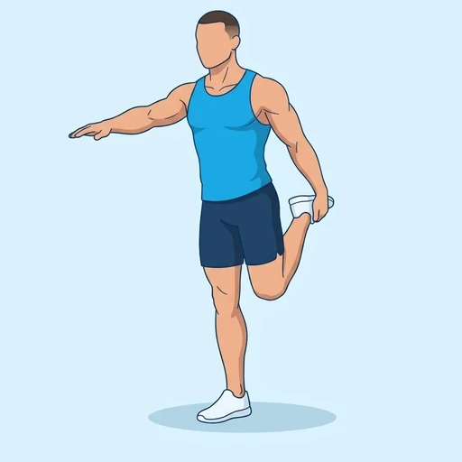
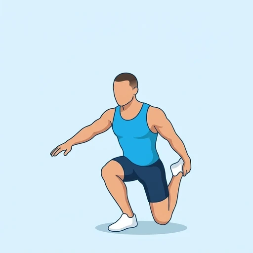

Shrimp Squat
An advanced single-leg squat in which you hold the rear foot behind you and lower until your back knee touches the floor. The working leg does all the lifting through a deep range, which makes it a demanding test of quad strength, hip control and balance.
Upper legs · Bodyweight · Advanced


Muscles worked by the Shrimp Squat
Primary
Secondary
Also called: glute, glutes, gluteus maximus, buttocks, butt, quad.
Equipment
No equipment — this is a bodyweight exercise.
How to do the Shrimp Squat
- Stand on one leg, bend the other knee and hold that foot behind you with the same-side hand.
- Hold your arms and chest steady and begin to bend the standing knee, sitting your hips down and slightly back.
- Lower until the back knee lightly touches the floor behind the standing foot.
- Keep your chest up and your standing heel on the floor throughout the descent.
- Press through the whole standing foot and straighten that leg to return to standing without letting go of the rear foot.
- Complete the planned repetitions, then repeat on the other leg.
Form tips
- Touch the floor with the knee lightly and do not drop onto it; control the descent with the standing leg.
- Lean the trunk forward a little to keep your balance; the front knee tracks over the toes and the heel stays down.
- Learn the movement first by holding a support with your free hand or lowering onto a folded mat.
At a glance
| Body part | Upper legs |
|---|---|
| Category | Strength |
| Force type | Push |
| Mechanic | Compound |
| Difficulty | Advanced |
| Equipment | Bodyweight |
| Goals | Strength, Hypertrophy |
| Tags | Leg day, Calisthenics, No axial load, Lower back safe, Shoulder safe |
| MET | 6.0 (metabolic equivalent, for calorie estimates) |
| Unilateral | Yes |
| Bodyweight | Yes |
| Dataset id | shrimp-squat |
Shrimp Squat in German & Spanish
| German | Shrimp Squat |
|---|---|
| Spanish | Sentadilla Shrimp |
Descriptions, instructions and tips ship in all three languages in the JSON.
Related exercises
Exercise data (JSON)
The record below is exactly what exercises.json ships for this exercise — names, descriptions, instructions and tips in English, German and Spanish.
{
"id": "shrimp-squat",
"name_en": "Shrimp Squat",
"name_de": "Shrimp Squat",
"name_es": "Sentadilla Shrimp",
"description_en": "An advanced single-leg squat in which you hold the rear foot behind you and lower until your back knee touches the floor. The working leg does all the lifting through a deep range, which makes it a demanding test of quad strength, hip control and balance.",
"description_de": "Eine fortgeschrittene einbeinige Kniebeuge, bei der du den hinteren Fuß hinter dir hältst und dich absenkst, bis das hintere Knie den Boden berührt. Das Arbeitsbein leistet das ganze Heben über einen tiefen Bewegungsumfang, was ein anspruchsvoller Test für Quadrizepskraft, Hüftkontrolle und Gleichgewicht ist.",
"description_es": "Una sentadilla avanzada a una pierna en la que sujetas el pie trasero detrás de ti y bajas hasta que la rodilla trasera toca el suelo. La pierna de trabajo hace todo el esfuerzo de subida en un rango profundo, lo que la convierte en una prueba exigente de fuerza de cuádriceps, control de cadera y equilibrio.",
"category": "strength",
"force_type": "push",
"mechanic": "compound",
"difficulty": "advanced",
"body_part": "upper_legs",
"primary_muscles": [
"gluteus_maximus",
"quadriceps"
],
"secondary_muscles": [
"erector_spinae",
"gastrocnemius",
"gluteus_medius",
"hamstrings"
],
"goals": [
"strength",
"hypertrophy"
],
"tags": [
"leg_day",
"calisthenics",
"no_axial_load",
"lower_back_safe",
"shoulder_safe"
],
"variation_group": "squat",
"is_unilateral": true,
"is_bodyweight": true,
"instructions_en": [
"Stand on one leg, bend the other knee and hold that foot behind you with the same-side hand.",
"Hold your arms and chest steady and begin to bend the standing knee, sitting your hips down and slightly back.",
"Lower until the back knee lightly touches the floor behind the standing foot.",
"Keep your chest up and your standing heel on the floor throughout the descent.",
"Press through the whole standing foot and straighten that leg to return to standing without letting go of the rear foot.",
"Complete the planned repetitions, then repeat on the other leg."
],
"instructions_de": [
"Stelle dich auf ein Bein, beuge das andere Knie und halte den Fuß hinter dir mit der gleichseitigen Hand fest.",
"Halte Arme und Brust ruhig und beginne, das Standbeinknie zu beugen, indem du die Hüfte nach unten und leicht nach hinten schiebst.",
"Gehe nach unten, bis das hintere Knie den Boden hinter dem Standfuß leicht berührt.",
"Halte die Brust oben und die Ferse des Standbeins während des gesamten Abwärtswegs am Boden.",
"Drücke dich über den ganzen Standfuß ab und strecke das Bein, um wieder aufzustehen, ohne den hinteren Fuß loszulassen.",
"Absolviere die geplante Anzahl an Wiederholungen und wiederhole dann mit dem anderen Bein."
],
"instructions_es": [
"Ponte de pie sobre una pierna, flexiona la otra rodilla y sujeta ese pie por detrás con la mano del mismo lado.",
"Mantén los brazos y el pecho firmes y empieza a flexionar la rodilla de apoyo, llevando las caderas hacia abajo y ligeramente hacia atrás.",
"Baja hasta que la rodilla trasera toque suavemente el suelo detrás del pie de apoyo.",
"Mantén el pecho elevado y el talón de apoyo en el suelo durante todo el descenso.",
"Empuja con todo el pie de apoyo y estira esa pierna para volver a ponerte de pie sin soltar el pie trasero.",
"Completa el número de repeticiones previsto y luego repite con la otra pierna."
],
"tips_en": [
"Touch the floor with the knee lightly and do not drop onto it; control the descent with the standing leg.",
"Lean the trunk forward a little to keep your balance; the front knee tracks over the toes and the heel stays down.",
"Learn the movement first by holding a support with your free hand or lowering onto a folded mat."
],
"tips_de": [
"Berühre den Boden nur leicht mit dem Knie und lasse dich nicht darauf fallen; kontrolliere den Abwärtsweg mit dem Standbein.",
"Lehne den Oberkörper etwas nach vorn, um das Gleichgewicht zu halten; das vordere Knie zeigt über die Zehen und die Ferse bleibt unten.",
"Lerne die Bewegung zuerst, indem du dich mit der freien Hand an einer Stütze festhältst oder dich auf eine gefaltete Matte absenkst."
],
"tips_es": [
"Toca el suelo con la rodilla suavemente y no te dejes caer sobre ella; controla el descenso con la pierna de apoyo.",
"Inclina un poco el tronco hacia delante para mantener el equilibrio; la rodilla delantera sigue la línea de las puntas de los pies y el talón permanece abajo.",
"Aprende primero el movimiento sujetándote a un soporte con la mano libre o bajando sobre una colchoneta doblada."
],
"met": 6.0,
"images": {
"flat": {
"start": "images/flat/shrimp-squat-start.webp",
"peak": "images/flat/shrimp-squat-peak.webp"
}
}
}Fetch just this exercise
const { exercises } = await fetch(
"https://exercise-dataset.com/exercises.json"
).then(r => r.json());
const ex = exercises.find(e => e.id === "shrimp-squat");Free for personal and commercial in-app use with attribution (“Exercise data by RepDB”) — see the license and ready-made attribution snippets. Redistributing the data as a dataset or API is not permitted.